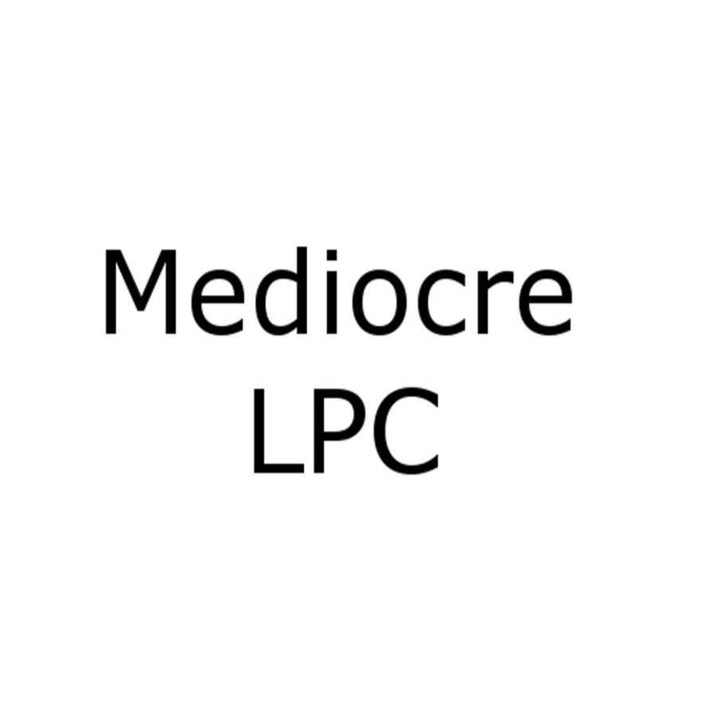

So what is this project of mine? It’s a YouTube channel. I lost a bet to some friends and I actually enjoyed making videos. So I made a YouTube channel and I keep it up to this very day.
Yes indeed, a hobby I started due to a bet happens to be a YouTube channel. So what is it I do on this channel? Is it an outlet for the creative part of my mind, a show case for my artistic genius, a resume for a future of film making? Nope, I make mediocre let’s play videos. One might call me a mediocre let’s play channel. My videos tend to be ten-minute videos where I talk to the audience while commenting on the game I happen to be playing. I tend to make a fool of myself but that’s why I enjoy it. I try not to take myself seriously and hope that someone gets a laugh out of me making myself a joke.
| Major Videos | ||
|---|---|---|
| Video Title | Date Posted | Significance |
| Minecraft: The Quest for Coal | July 3, 2016 | First Video |
| Dark Souls 2 Guide | June 20, 2017 | My Favorite Video |
| Savage Lands Episode 1 - The Quest for Bandits | June 7, 2017 | Most Viewed Video Sadly |
| ok bud | September 20, 2017 | It's really dumb but it generally gets me to chuckle. |
The first thing I do with a video is get an idea. I think of a series I can make enjoyable or a single video that will take a little long to complete. The next thing I do is record the video using an open-source program called OBS and record my voice with another open-source program named Audacity. I then combine the audio and video, trim the video down, and then upload it to YouTube. While the upload is undertaking I create the image a person on YouTube will see before they click on the video. You can see some of these down below.
|  |
|---|
In terms of goals for the channel I just want to continue to cultivate a community. Some of the most rewarding parts of this hobby has been the people who have found my videos entertaining enough to subscribe. Often these people will join my community “Discord” server where they can talk with me and other subscribers directly. At the time of typing this, I have 280 subscribers and 30 people in my Discord server. The success of the channel has allowed me to start a live streaming channel on the Twitch platform. These live-streams are like the videos I produce but my viewers watch it live and can comment in real time. This platform has become a small source of income for myself which I plan to reinvest into the channel. Truly this has been a rewarding experience and I am proud of what I have accomplished over this last year and a half.